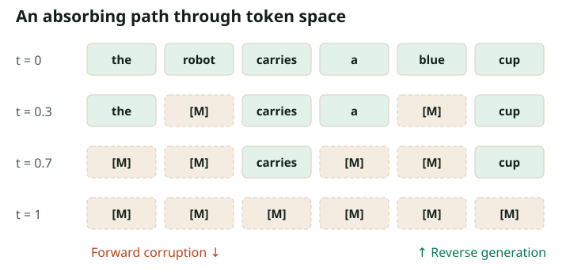

From Continuous Paths to Token Jumps
What to bring from MIT 6.S184
The conditional probability path construction is the prerequisite that matters most: choose an endpoint, sample an intermediate state conditional on it, and learn something about the hidden endpoint from that state. Keep that recipe. We will replace Gaussian corruption with a categorical channel. The existing conditional-target argument will reappear as cross-entropy learning a posterior.
There is one deliberate notation change. The MIT notes move from noise at $t=0$ to data at $t=1$. In Parts 1–3 and 5–8 here, $t=0$ is clean text and $t=1$ is fully masked text, matching a common diffusion convention. Part 4 explicitly introduces $s=1-t$ to return to the flow-matching direction. A minus sign in a schedule derivative is meaningless until this direction is fixed.
Three ways to represent text diffusion
| State | Corruption | What generation must resolve |
|---|---|---|
| Continuous token embeddings | Add noise to vectors | Convert the final continuous state into discrete tokens |
| Vocabulary tokens | Replace tokens with other tokens | Infer which visible tokens are trustworthy |
| Vocabulary plus a mask symbol | Replace tokens with an absorbing mask | Predict missing tokens from the visible subset |
Diffusion-LM is an example of the embedding route. D3PM develops discrete transition processes, including absorbing states. This series concentrates on the absorbing-mask route because it exposes the central mathematics with a small state space and connects directly to the large models in Part 5. It is a choice of scope, not a claim that every diffusion language model uses masks.
A complete forward process in one equation
Let $x_0=(x_0^1,\ldots,x_0^L)$ be a sequence over vocabulary $\mathcal V$. Introduce a special symbol $m\notin\mathcal V$. Let $a(t)$ be a decreasing survival probability, with $a(0)=1$ and $a(1)=0$. For each position independently,
Here $\delta_v$ means probability one on symbol $v$. The clean token either survives exactly or disappears behind a mask. For the linear schedule $a(t)=1-t$, a token is masked with probability $t$. At $t=0.3$, a length-100 sequence has 30 masks on average; the actual count is random.

The single-time formula tells us how to draw training inputs. To define a Markov trajectory, require that masks stay masked. For $0\le s<t\le1$ and $a(s)>0$, a currently visible token survives from $s$ to $t$ with probability $a(t)/a(s)$. A previously masked token remains $m$. Multiplying survival probabilities across intervals gives the required marginal $a(t)$.
A useful coupling assigns each position one independent threshold $U_i\sim\mathrm{Unif}(0,1)$ and masks it whenever $U_i\le t$ for the linear schedule. Reuse these thresholds while moving a visualization slider: increasing time can then only add masks. Redrawing independent masks at every slider value would show correct snapshots, but not one consistent absorbing trajectory.
4 of 8 positions masked at time 0.50.
Why a reverse model needs the whole sequence
Suppose the visible text is “the [MASK] are sleeping.” The unknown noun depends on words to its right as well as its left. A denoiser therefore takes the entire corrupted sequence and predicts a categorical distribution at each position:
For a visible position, the posterior is already known: its clean token equals its current token. For a masked position, the network must infer it. A bidirectional transformer is a convenient parameterization, but the generative model is the combination of corruption, denoiser, and reverse transition rule. “Transformer” names a network architecture; “diffusion” names a way to define and sample a probability distribution.
Parallel logits do not imply independent language
Consider a tiny corpus with only two equally likely sequences: red red and blue blue. When both positions are masked, each individual posterior is half red and half blue. If we independently draw both tokens in one pass, red blue and blue red together receive half the probability. Neither belongs to the corpus.
Reveal one position first, then run the denoiser again. If the first token is red, the second posterior becomes red with probability one. Dependencies emerge because predictions are recomputed after earlier reveals. A denoiser can have perfect one-position posteriors and still produce poor joint samples under a coarse parallel sampler. This example will become a numerical experiment in Part 3; we will not rederive it in every chapter.
Why this is more than calling BERT repeatedly
Masked prediction by itself does not specify a normalized joint distribution. To turn a denoiser into a generator, specify an initial distribution, a sequence of normalized transitions, and an endpoint rule. Their composition defines a distribution over final strings, even when evaluating its probability requires summing over latent trajectories.
Likewise, removing a causal attention mask from an autoregressive checkpoint does not train it to recover heavily corrupted text. Both the distribution of visible context and the prediction target have changed. Part 2 derives the training objective; Part 5 explains checkpoint adaptation.
A translation dictionary
| Continuous notes | Discrete language counterpart |
|---|---|
| Gaussian conditional path | Masking or replacement kernel |
| Spatial velocity / drift | Rates of jumping between discrete states |
| Score $\nabla_x\log p_t(x)$ | Probability ratios between states, or endpoint posteriors |
| Continuity equation | Incoming probability flow minus outgoing flow |
| Numerical integration error | Finite-step approximation, including simultaneous dependent reveals |
There is no meaningful derivative with respect to a raw token ID: permuting the vocabulary's integer labels must not change the probabilistic problem. Embeddings are differentiable with respect to network parameters, but that does not turn a categorical state into a continuous diffusion state.
Check your understanding: Does independent corruption make the corrupted sequence independent across positions?
No. Independence holds conditional on the clean sequence. Averaging over correlated clean sequences produces correlated corrupted sequences. In the two-color corpus, observing one visible red token rules out every clean sequence containing blue.
Read next
Continue to the masked diffusion objective. For broader formulations, read Austin et al., D3PM and Campbell et al., continuous-time discrete denoising. The latter is the bridge to the jump-rate treatment in Part 4.